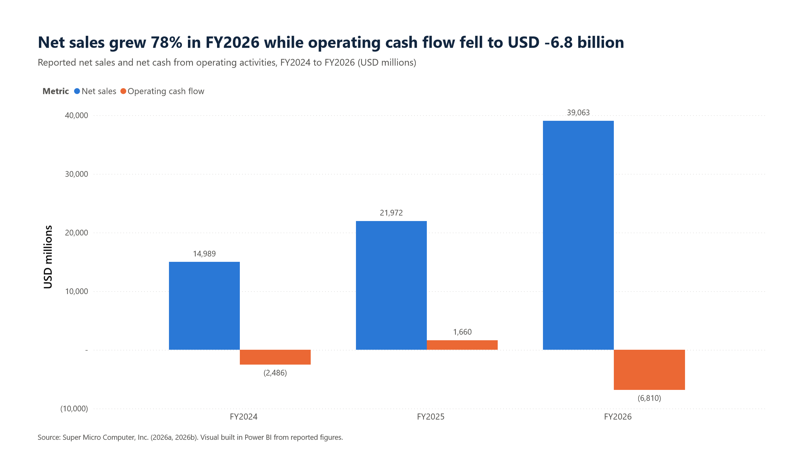
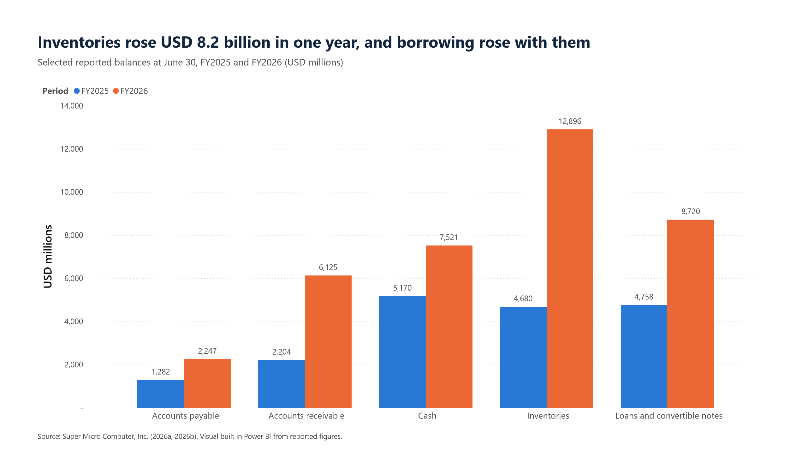
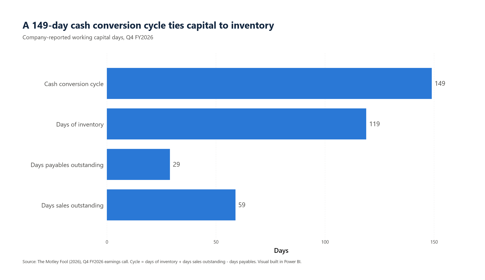
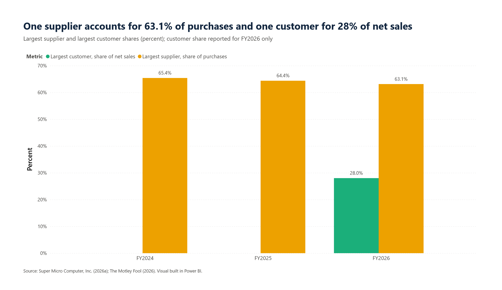
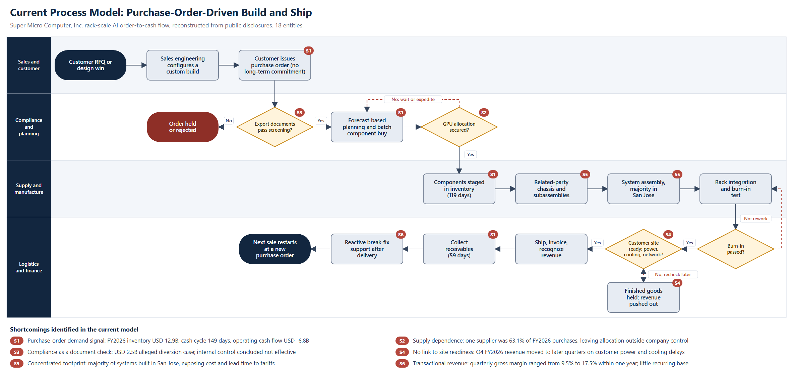

Introduction
Company Overview
Super Micro Computer, Inc. (Supermicro) is a San Jose, California, technology company founded in 1993. The company supplies servers, storage, switches, software, and support services, with a growing concentration in rack-scale infrastructure for artificial intelligence (AI) workloads (Super Micro Computer, Inc., 2026a). At June 30, 2026, the company occupied approximately 5.7 million square feet of facilities and employed approximately 3,500 research and development staff, 2,100 manufacturing staff, 800 sales and marketing staff, and 600 general and administrative staff (Super Micro Computer, Inc., 2026a).
The flagship offering is Data Center Building Block Solutions (DCBBS), a modular portfolio of liquid-cooled AI racks and supporting data center systems. Current rack platforms include NVIDIA Vera Rubin configurations, which ship fully integrated and tested from the factory (HPCwire, 2026).


Process Area Selected for Improvement
The present analysis examines the order-to-cash process for rack-scale AI systems: the sequence running from customer inquiry through procurement, manufacture, delivery, collection, and support. The selection rests on a clear divergence between commercial results and financial conversion. Demand is not the constraint. Supermicro reported net sales of USD 39.1 billion in fiscal year (FY) 2026, an increase of 78%, and received more than USD 60 billion in new orders during the fourth quarter alone (Super Micro Computer, Inc., 2026b; The Motley Fool, 2026). The constraint lies in how the process converts demand into cash, margin, and controlled risk.

Analysis. Net sales rose by USD 17.1 billion in FY2026, yet net cash from operating activities moved from positive USD 1.7 billion to negative USD 6.8 billion. Growth at the current process design consumes cash faster than growth generates cash.

Analysis. Inventories increased by USD 8.2 billion and receivables by USD 3.9 billion, while payables increased by only USD 1.0 billion. Suppliers therefore financed a small share of the build. Loans and convertible notes rose to USD 8.7 billion, and the company raised USD 5.6 billion of common and mandatory convertible preferred equity in June 2026 (The Motley Fool, 2026). FY2026 also carried USD 188.1 million of inventory write-downs (Super Micro Computer, Inc., 2026b).

Analysis. The cash conversion cycle reached 149 days, a lengthening of 43 days in one quarter (The Motley Fool, 2026). Inventory accounts for most of the cycle, and only 29 days of supplier credit offset 178 days of combined inventory and receivable exposure.

Analysis. A single unnamed supplier represented 63.1% of FY2026 purchases, and a single customer represented 28% of FY2026 net sales. The process therefore sits between two concentrated counterparties, with limited control over either supply allocation or demand timing.
Current Process Model
Figure 5 presents the current process. The diagram is an analytical reconstruction drawn from public disclosures, not an internal company procedure. The model contains 18 entities across four functional lanes.

Process logic. The flow begins with a customer request or design win, followed by a custom configuration prepared by sales engineering. Supermicro typically sells under purchase orders rather than long-term purchase commitments (Super Micro Computer, Inc., 2026a), so the purchase order serves as the primary contractual demand signal. Export documentation is screened, and planners then buy components against a forecast in batches. The process waits or expedites whenever GPU allocation is unavailable. Components enter inventory, chassis and subassemblies arrive through related parties Ablecom Technology and Compuware Technology, and system assembly takes place mostly in San Jose (Super Micro Computer, Inc., 2026a). Rack integration and burn-in testing follow. Only after manufacture does the process test whether the customer site can accept delivery. Shipment, invoicing, collection, and reactive support complete the cycle, and the next sale restarts at a new purchase order.
Shortcomings of the Current Model
| Ref. | Shortcoming | Evidence | Consequence |
|---|---|---|---|
| S1 | Demand signal arrives late and without commitment | Purchase-order selling; USD 12.9 billion inventory; 149-day cycle | Capital is committed ahead of firm demand. Forecast-driven ordering amplifies variability upstream, the pattern described as the bullwhip effect (Lee et al., 1997). |
| S2 | Supply dependence | One supplier at 63.1% of purchases | Allocation decisions outside company control set output, and shortages trigger expediting. |
| S3 | Compliance operates as a document check | March 2026 charges allege that approximately USD 2.5 billion of servers were purchased through a Southeast Asian intermediary, with staged dummy units used to deceive compliance reviewers (U.S. Attorney's Office, 2026) | Paper-based screening does not establish physical end use. The company was not named as a defendant, and an independent investigation found no evidence of current senior management knowledge; the Board adopted enhancement recommendations in full (Super Micro Computer, Inc., 2026c). Separately, management concluded that internal control over financial reporting was not effective at June 30, 2026 (Super Micro Computer, Inc., 2026a). |
| S4 | No link between production and site readiness | Fourth-quarter revenue moved to later quarters because of customer delays in power, cooling, and networking (The Motley Fool, 2026) | Finished systems wait on sites. Inventory and revenue timing absorb the delay. |
| S5 | Concentrated footprint | Majority of systems manufactured in San Jose (Super Micro Computer, Inc., 2026a) | Cost and lead time remain exposed to tariffs and regional conditions. Lower tariff costs and inventory reserves explained about 25% of the fourth-quarter margin gain, which shows the sensitivity (The Motley Fool, 2026). |
| S6 | Transactional revenue | Quarterly gross margin of 9.5% and 17.5% one year apart; guidance of 10.4% to 10.8% for the next quarter (Super Micro Computer, Inc., 2026b; The Motley Fool, 2026) | Earnings depend on deal mix. Customer relationships produce little contracted, recurring revenue after delivery. |
Conclusion of the current-state review. Each shortcoming shares one root cause: the process commits capital and capacity before demand, end use, and site readiness are verified. Incremental tuning of forecasting or assembly would leave that sequence intact. Correcting the sequence requires a different business model.